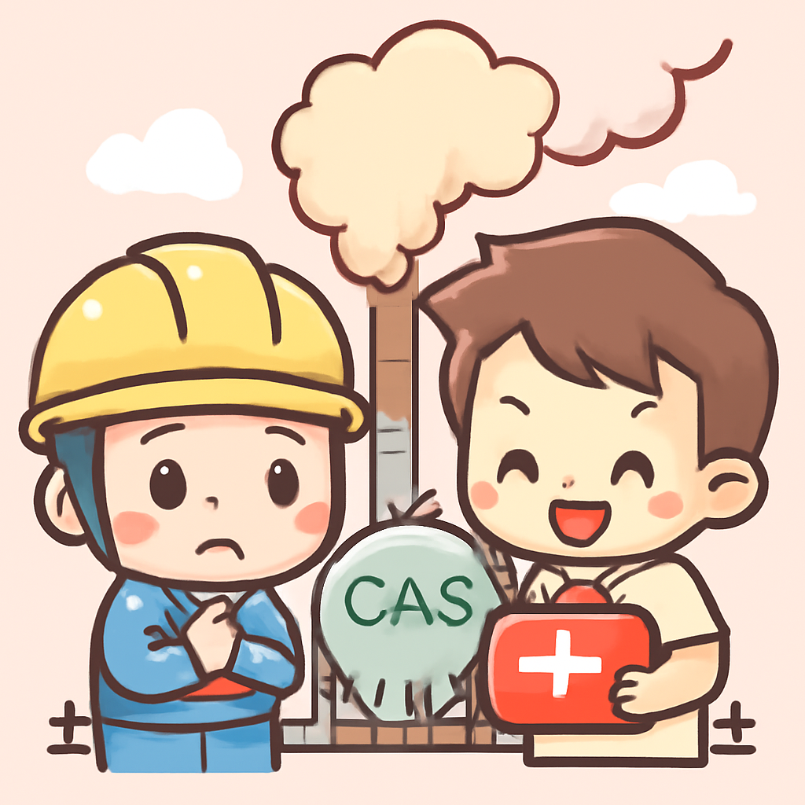
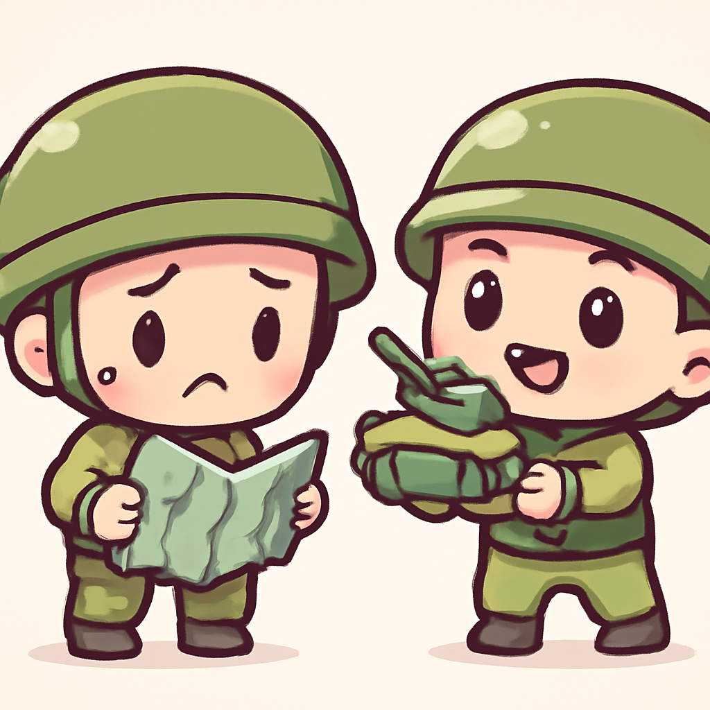
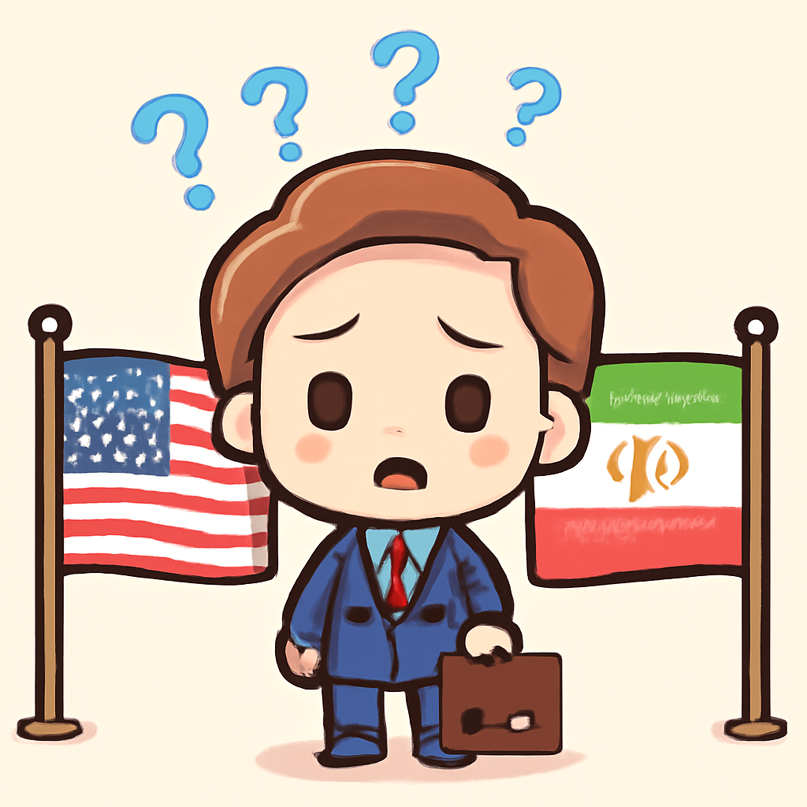
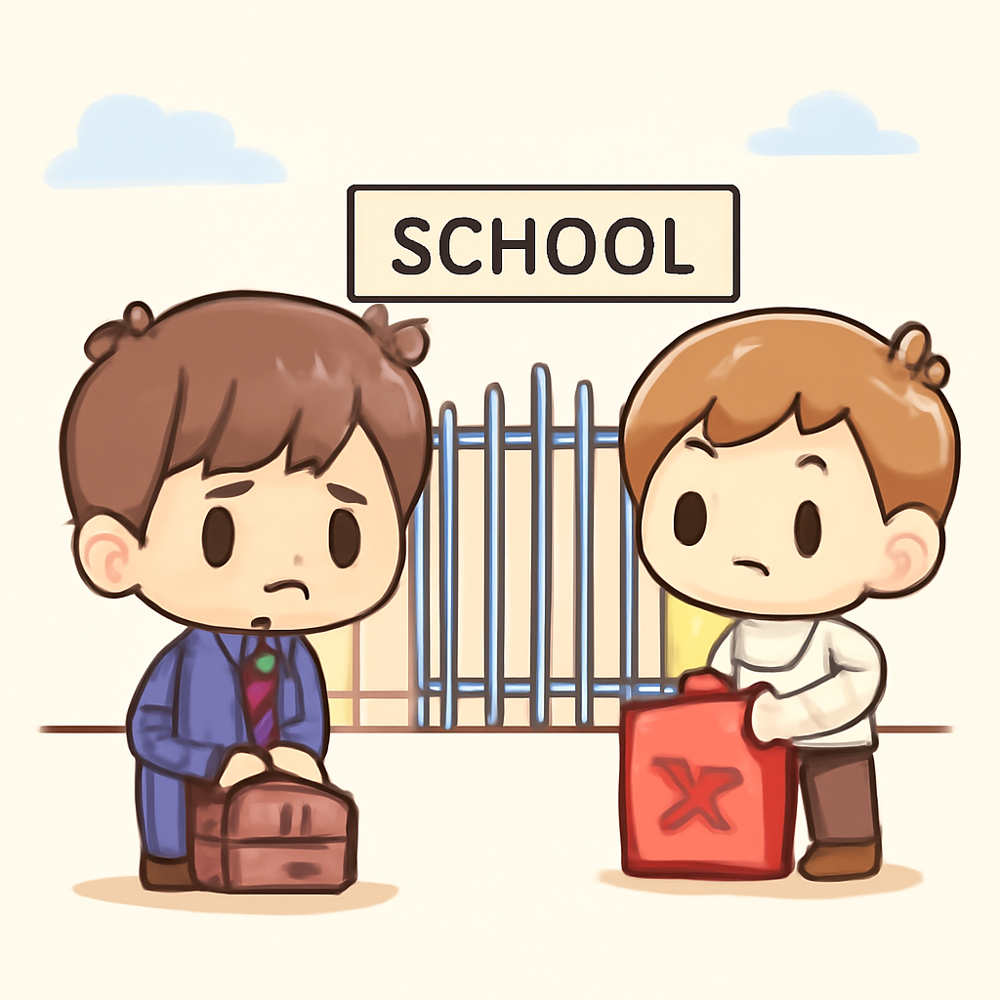

其一 · 卡塔爾 · 液化天然氣廠爆炸造成13死
卡塔爾液化天然氣廠發生爆炸，造成13人喪生。

在卡塔爾的液化天然氣加工廠，日前發生了一起技術故障導致的爆炸，造成至少13人死亡，66人受傷。這起事件發生在重啟操作期間，影響了該國的天然氣生產，對全球能源供應構成威脅，特別是在當前能源需求高漲的時期。希望這次事故不會讓卡塔爾的天然氣夢想變成泡影。
🔗 原始新聞 ↗
2026-06-23 · 以古觀今，以笑抗愁
卡塔爾液化天然氣廠發生爆炸，造成13人喪生。

在卡塔爾的液化天然氣加工廠，日前發生了一起技術故障導致的爆炸，造成至少13人死亡，66人受傷。這起事件發生在重啟操作期間，影響了該國的天然氣生產，對全球能源供應構成威脅，特別是在當前能源需求高漲的時期。希望這次事故不會讓卡塔爾的天然氣夢想變成泡影。
🔗 原始新聞 ↗
烏克蘭頓巴斯地區，俄軍增兵使局勢緊張。

烏克蘭的頓巴斯地區再次成為焦點，俄軍增兵威脅著關鍵城市Kostyantynivka的安全。如果這裡淪陷，俄軍將能夠向烏克蘭的最後防線發起進攻。這不僅影響當地民眾的安全，也可能改變整個戰爭的格局，讓人不禁想問：戰爭究竟何時才會結束？
🔗 原始新聞 ↗
美國對伊朗放寬石油制裁，核檢查問題複雜。

美國在與伊朗的對話中，決定放寬部分石油制裁，但伊朗方面卻表示並未對核檢查作出新承諾。這樣的消息讓國際社會對兩國的關係感到疑惑不已，因為在核問題上，雙方的立場仍然相當不一致。看來，改善關係的路途還是漫長啊！
🔗 原始新聞 ↗
日本國會開始審議AI相關法案，對未來科技影響深遠。
日本國會最近開始審議一項關於人工智慧的法案，旨在規範AI發展及其應用。隨著AI技術迅速發展，這項法案的重要性不言而喻，未來可能會影響許多行業和職位。希望這次立法不會成為科技進步的絆腳石！
🔗 原始新聞 ↗
古巴因燃料危機提前結束學年，學校停課。

古巴目前正面臨嚴重的燃料危機，導致學校不得不提前結束學年。這對於本就搖搖欲墜的教育系統來說無疑是雪上加霜，許多學生的學習計畫因此受到影響。希望古巴能早日走出這個燃料困境，讓學生們回到課堂！
🔗 原始新聞 ↗